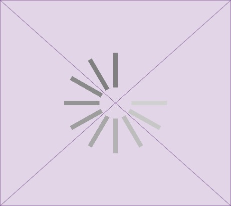

Le LF2L crée un écosystème favorable à l’échange d’idées et à la fertilisation croisée des connaissances. LF2L agit comme un vecteur de progressive de transfert de technologie en favorisantun soutien aux chercheurs désireux de transformer leurs découvertes en produits ou services viables sur le marché, il contribue à valoriser les investissements réalisés dans la recherche et à stimuler l’innovation soutenable.
En réunissant des chercheurs, des entrepreneurs et des experts de divers domaines, il favorise les rencontres fortuites qui peuvent conduire à des collaborations fructueuses et à des percées scientifiques. Les discussions informelles et les séminaires organisés dans ces espaces stimulent également la réflexion et la créativité.
Le LF2L fournit des ressources matérielles et immatérielles indispensables à la recherche. Il offre des infrastructures de pointe, telles que des laboratoires équipés des dernières technologies et des outils de prototypage rapide, qui permettent aux chercheurs d’expérimenter et de valider rapidement leurs idées. De plus, ces espaces offrent souvent un accès à des financements, à des mentors et à des réseaux de contacts, ce qui facilite la réalisation de projets de recherche ambitieux.
Le LF2L favorise la transdisciplinarité en encourageant la collaboration entre des chercheurs issus de différentes disciplines. Cette approche collaborative et interdisciplinaire est essentielle pour aborder des défis complexes et pour développer des solutions innovantes qui transcendent les frontières traditionnelles des disciplines académiques.